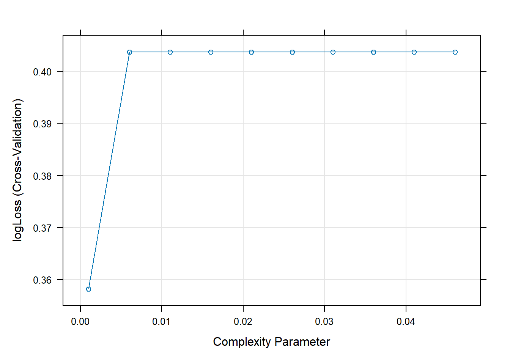
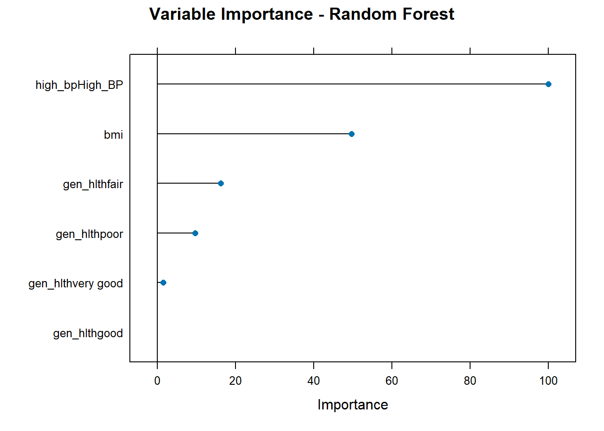

library(tidyverse)
library(caret)
library(fastDummies)
library(rpart)
library(rsample)
data <- readRDS("clean_data.rds")Modeling
Introduction
In this section, we build predictive models to attempt to classify individuals as diabetic or non-diabetic using the BRFSS 2015 dataset explored in the EDA page. This data set comes from a CDC phone survey conducted annually with over 20 variables concerning lifestyle, overall health, and pertinent medical history (Treboul 2021). To do this modeling, we’ll use three different techniques for training and comparison:
- Logistic Regression
- Classification Tree
- Random Forest
We’ll evaluate each model’s performance using 5-fold cross-validation and the log-loss metric. The final model will be selected based on performance on the test set that will be created below.
To begin this modeling process, let us first load in our packages and cleaned data from the EDA file.
Now that we have the data and packages that we need, we will now split the data into a train and test set. Noting the imbalance of diabetes diagnoses in this data set relative to those two do no have a diagnosis, we will stratify on that with our 70-30 split to ensure representation in each set. Lastly, we will set a seed for reproducibility.
set.seed(123)
split <- initial_split(data, prop = 0.7, strata = diabetes_binary)
train <- training(split)
test <- testing(split)The next step is to set up our trainControl. This allows us to specify that we want 5-fold cross validation as well as a log loss metric to be used in model training and selection.
ctrl <- trainControl(
method = "cv",
number = 5,
classProbs = TRUE,
summaryFunction = mnLogLoss,
savePredictions = "final"
)Now, we are ready to begin fitting models! We will start with logistic regression.
Logistic Regression
First, we will fit a logistic regression model. This is a parametric model, because it assumes a generalized linear model form for the relationship between response and predictors. It is also used as a classification algorithm to model the probability of a binary outcome based on one or more predictor variables, which is very appropriate for this data. This model does not do variable selection, so we will manually select our variables for our 3 logistic model fits. Standardization of the predictors does not need to occur, but dummy variables must be made in place of factor variables; train() does this automatically.
Our 3 models will be as follows:
- diabetes on BMI and high blood pressure presence
- diabetes on BMI, high blood pressure presence, and general health rating
- diabetes on BMI, high blood pressure presence, general health rating, and recent physical activity level
These models are trained and fit for comparison below:
# logit model 1
logit1 <- train(
diabetes_binary ~ bmi + high_bp,
data = train,
method = "glm",
family = binomial,
metric = "logLoss",
trControl = ctrl)
# logit model 2
logit2 <- train(
diabetes_binary ~ bmi + high_bp + gen_hlth,
data = train,
method = "glm",
family = binomial,
metric = "logLoss",
trControl = ctrl)
# logit model 3
logit3 <- train(
diabetes_binary ~ bmi + high_bp + gen_hlth + phys_activity,
data = train,
method = "glm",
family = binomial,
metric = "logLoss",
trControl = ctrl)With those models fit, we will now compare log loss values to select the best performing logistic regression model.
logloss_results <- tibble(
Model = c("Model 1", "Model 2", "Model 3"),
LogLoss = c(
min(logit1$results$logLoss),
min(logit2$results$logLoss),
min(logit3$results$logLoss)
)
)
logloss_results# A tibble: 3 × 2
Model LogLoss
<chr> <dbl>
1 Model 1 0.357
2 Model 2 0.335
3 Model 3 0.334We can see here that model 2 has the lowest log loss, so we will select that as our best performing model and move on to compare that fit to 2 other model fits later in this report. It is important to know that there is a very small difference between these 2 log loss values (around 0.00015), so it could be desirable to select the simpler of these two models since it required fewer variables to get to a very similar result. For the sake of choosing the overall “best” performing model, we will select the one with the lowest logloss here.
best_log_model <- logit3Classification Tree
Next, we will fit a classification tree. This is a nonparametric model due to the lack of assumption of any underlying information aside from the data itself. This model will be tuned on the cp value (complexity parameter), which will allow us to know to what extent pruning should occur (i.e. how many splits the tree should have). This can mitigate potential overfitting. This model performs variable selection by splitting on the variable deemed most siginificant first. This means that only one model needs to be fit in order to get an overall best model. Lastly, it is important to note that standardization of predictors does not need to occur to use this model appropriately.
We’ll start with fitting our cp tuning grid. Then, we will fit a classification tree using the rpart method in caret and select the best cp based on the log-loss with 5-fold cross-validation discussed and used above.
cp_grid <- expand.grid(cp = seq(0.001, 0.05, by = 0.005))
tree_model <- train(
diabetes_binary ~ bmi + high_bp + gen_hlth,
data = train,
method = "rpart",
trControl = ctrl,
tuneGrid = cp_grid,
metric = "logLoss"
)The model has been fit! Let’s look at the log-loss values for the different values of cp.
plot(tree_model)
From the plot above, we notice that the lowest log-loss is very close to the beginning. This could mean that there is some overfitting going on in this model, but we will select the cp value with the lowest log loss. We will decipher that below:
tree_model$bestTune cp
1 0.001min(tree_model$results$logLoss)[1] 0.3581638The model with the lowest log loss is confirmed to be the one with the cp of 0.001. We will take that model into consideration at the end.
best_tree_model <- tree_modelRandom Forest
Next, we will fit an ensemble tree model using random forest. This is a nonparametric model due to the lack of assumptions about the population distribution. This fit is tuning on the mtry value, which denotes the number of variables that can be taken into account at each cut (through a random sample). Similar to the classification tree model, it also performs variable selection due to each branch being representative of selecting a cutoff value for a certain predictor deemed important. Lastly, standardization of the predictors need not happen, since that will only adjust the cutoff value for each branch accordingly.
rf_grid <- data.frame(mtry = c(2, 3, 4))
rf_model <- train(
diabetes_binary ~ bmi + high_bp + gen_hlth,
data = train,
method = "rf",
trControl = ctrl,
tuneGrid = rf_grid,
metric = "logLoss"
)Now, we will evaluate which value for the tuning parameter has the lowest log loss. We will do that below.
rf_model$bestTune mtry
3 4min(rf_model$results$logLoss)[1] 3.887387We will save that model to evaluate at the end of the report.
best_rf_model <- rf_modelWe will also look at a variable importance plot to see which variables were the most important for the random forest model we just fit.
varImp(rf_model) |>
plot(main = "Variable Importance - Random Forest")
From the plot above, we can see that having high blood pressure was the most important variable in the making of this plot. This aligns with the discussion earlier about the potential importance of the comorbidity or high blood pressure with diabetes.
Overall Best Model
Now, we will pick an overall best model out of the 3 models we have chosen above. We will do this by predicting with each of the overall best models on the test set, compute the log loss for each of these prediction vectors, and compare those log loss vlaues to one another to select the overall best model. We will do that below:
library(MLmetrics)
Attaching package: 'MLmetrics'The following objects are masked from 'package:caret':
MAE, RMSEThe following object is masked from 'package:base':
Recalllog_preds <- predict(best_log_model, newdata = test, type = "prob")[, "Diabetes"]
tree_preds <- predict(best_tree_model, newdata = test, type = "prob")[, "Diabetes"]
rf_preds <- predict(best_rf_model, newdata = test, type = "prob")[, "Diabetes"]
true_vals <- test$diabetes_binary
logloss_logit <- LogLoss(log_preds, true_vals)Warning in Ops.factor(y_true, log(y_pred)): '*' not meaningful for factorsWarning in Ops.factor(1, y_true): '-' not meaningful for factorslogloss_tree <- LogLoss(tree_preds, true_vals)Warning in Ops.factor(y_true, log(y_pred)): '*' not meaningful for factors
Warning in Ops.factor(y_true, log(y_pred)): '-' not meaningful for factorslogloss_rf <- LogLoss(rf_preds, true_vals)Warning in Ops.factor(y_true, log(y_pred)): '*' not meaningful for factors
Warning in Ops.factor(y_true, log(y_pred)): '-' not meaningful for factorstest_results <- tibble(
Model = c("Logistic Regression", "Classification Tree", "Random Forest"),
Test_LogLoss = c(logloss_logit, logloss_tree, logloss_rf)
)
test_results# A tibble: 3 × 2
Model Test_LogLoss
<chr> <dbl>
1 Logistic Regression NA
2 Classification Tree NA
3 Random Forest NA